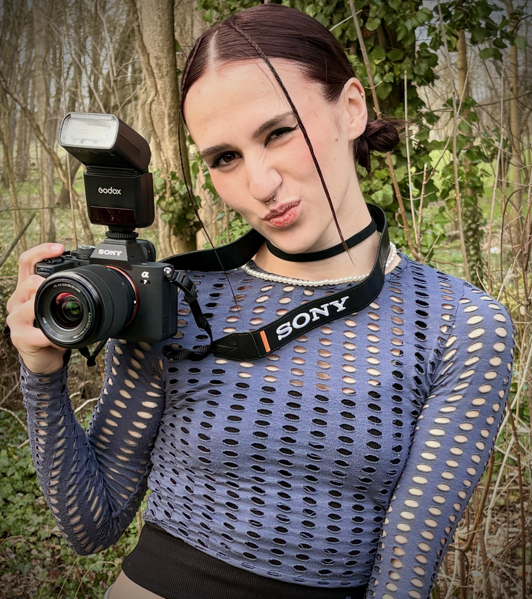

Histoire

Mon histoire
Moi c’est Adélaïde !
Je photographie depuis le lycée, là où tout a commencé. La passion ne m’a jamais quittée. Elle s’est même intensifiée de plus en plus. Au point où j’ai créé ma propre entreprise « LES YEUX OUVERTS ».
Créative et attentive aux moindres détails, j’aime imaginer, composer et donner vie aux idées. Chaque projet est pour moi une histoire à raconter. J’ai pour objectif de sublimer vos moments, mettre en lumière votre univers.
Je tiens à ajouter qu’une séance photo ne devrait jamais être un moment stressant, je tiens à ce que chaque shooting soit une expérience naturelle et surtout inoubliable. Et promis, même ceux qui disent “je ne suis pas photogénique” repartent avec le sourire et de magnifiques photos en prime of course.
Hâte de faire prendre vie à vos projets !